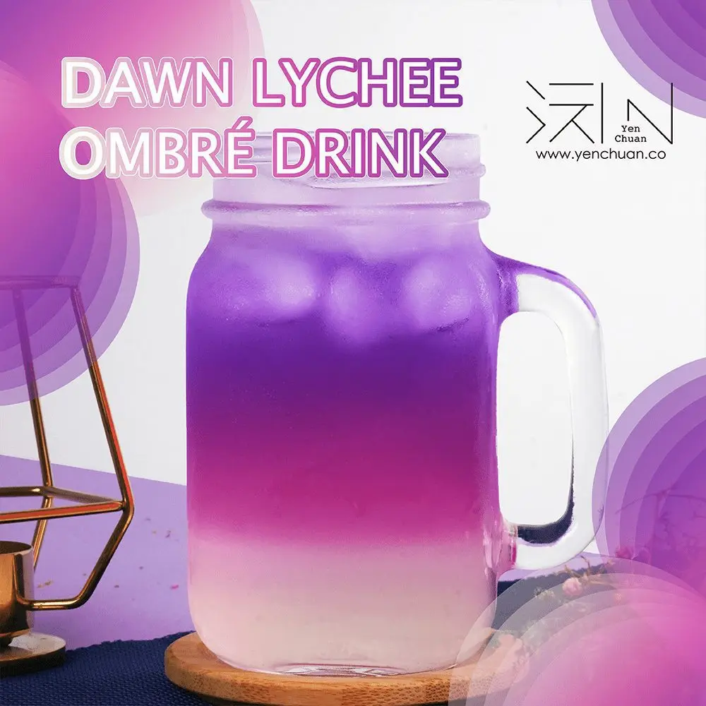

Articles / Recipes
A sunset in every sip – dawn lychee ombre!
2023-05-26 · News, Recipes

If you’re looking for a refreshing, visually stunning drink to brighten up your day, look no further than the Dawn Lychee Ombre Drink!
This drink not only delights the taste buds with its delectable lychee flavor, but also captivates the eyes with its mesmerizing ombre color gradient.
What’s so special about this treat, and how can you make it? Read on to learn more!

What is ombre?
Ombre is a French term meaning “Shaded” or “graduated”, referring to different colours fading into each other.
The concept of “ombre” has made its way into the culinary world, adding an artistic touch to various dishes and beverages!
How it works
As you take in the sight of this drink, you’ll be greeted by a delightful display of colors:
Bottom layer
The bottom layer, infused with the sweetness of lychee, presents a vibrant and inviting shade of white
Middle layer
As your eyes travel upward, the drink transitions seamlessly into a beautiful ombre shade of magenta
Top layer
To top it off, this drink boasts a vivid layer of purple, creating a wonderous spectacle of colours!
Ombre cocktails
The Dawn Lychee Ombre Drink is not just a stunning beverage; it is a canvas for you to show off your creativity and artistry!
Want to enhance this even further? Why not transform it into an enticing cocktail?
Here are a few spirit recommendations that pair beautifully with the lychee flavor:
Vodka
The clean and neutral flavor of vodka complements the sweetness of lychee, creating a well-balanced cocktail.
Add a shot or two of vodka to the ombre drink, and gently stir to blend the flavors. Serve over ice for a refreshing sip!
Gin
For a botanical twist, opt for gin. Its herbal notes and juniper undertones add complexity to the lychee base.
Combine gin with the Ombre Drink, and garnish with a slice of cucumber or a sprig of fresh basil!
Rum
If you’re seeking a tropical flair, rum is an excellent choice. Its hints of vanilla and caramel beautifully complement the lychee’s exotic sweetness!
Try using white or light rum for a refreshing blend, or experiment with aged rum for a richer and more nuanced profile.
Be it enjoying as a sophisticated cocktail or a visual spectacle, this drink offers limitless possibilities to express your culinary artistry!
Embrace your inner mixologist, let your imagination run wild, and unlock a world of flavors and visual delights with this enchanting beverage. Cheers!

Dawn Lychee Ombre Drink
A work of art that tantalizes both the eyes and taste buds, offering a refreshing and sensory experience like no other!
What you’ll need
Steps to configure the How-to Schema:
Mix the gradient color powder with 100ml water, stir well
Pour lychee syrup and the remaining water into a clear glass. Mix well
Add ice cubes to taste, then carefully pour in the mixture from step one to create the layered effect. Enjoy!
Tip: Garnish the beverage with a lychee fruit or a sprig of mint for an extra touch of elegance.
Your colourful journey starts now!
Whether you’re hosting a summer gathering or simply looking to add a touch of elegance to your day, this enchanting beverage is sure to leave a lasting impression.
Pick up the ingredients to get started!